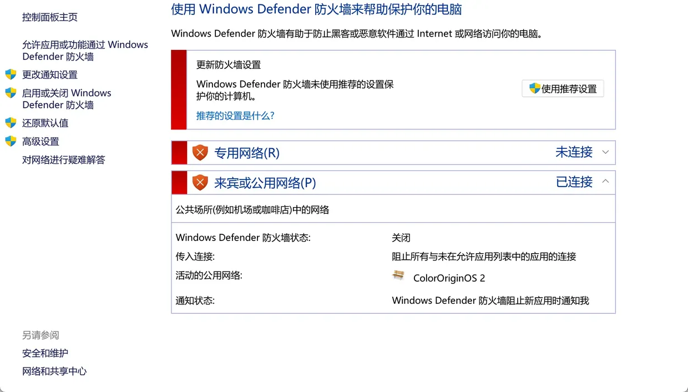

WebSocket 连接失败排查
记录一次连接失败排查，定位并修复 Windows 防火墙的端口限制。
在使用 WebSocket 进行实时通信时，遇到了连接失败的问题，但在本地开发环境中测试一切正常。
经过排查，问题出现在不同运行环境之间的网络访问限制。
问题描述
WebSocket 在本地测试环境中（如 localhost:8080）可以正常连接，但在其他开发环境中（不同端口或服务器地址）连接失败。
对比发现：
- 本地环境：8080 端口正常通信
- 其他环境：使用不同端口（连接失败）
排查过程
初步怀疑方向包括：
- WebSocket 服务是否正常启动
- 前后端地址是否一致（ws / wss）
- 端口是否开放
- 跨域或协议问题（http vs https / ws vs wss）
- 防火墙或安全组限制
问题原因
最终定位为：
Windows 防火墙拦截了非默认端口的 WebSocket 连接。
在本地测试时使用的 8080 端口通常是开发环境默认开放端口，因此不会触发拦截。
但在连接其他端口（如 3000、4000、9000 等）时，防火墙策略可能阻止了入站/出站连接。
解决方案
方案一：开放端口（推荐）
在 Windows 防火墙中手动开放 WebSocket 使用的端口：
- 控制面板 → Windows Defender 防火墙
- 高级设置
- 入站规则 / 出站规则
- 添加对应端口（TCP）
例如：
- 8080
- 3000
- 4000
方案二：临时关闭防火墙（仅用于调试）
控制面板\系统和安全\Windows Defender 防火墙

不推荐长期使用，仅用于排查问题关闭后可以快速验证是否为防火墙导致问题。
总结
本次问题核心原因是：
非默认端口在 Windows 防火墙中被拦截，导致 WebSocket 连接失败。
解决思路：
- 优先检查端口与网络访问
- 开放对应防火墙规则（推荐）
- 或使用代理 / 同域部署（最佳实践）
- 避免直接关闭防火墙作为长期方案